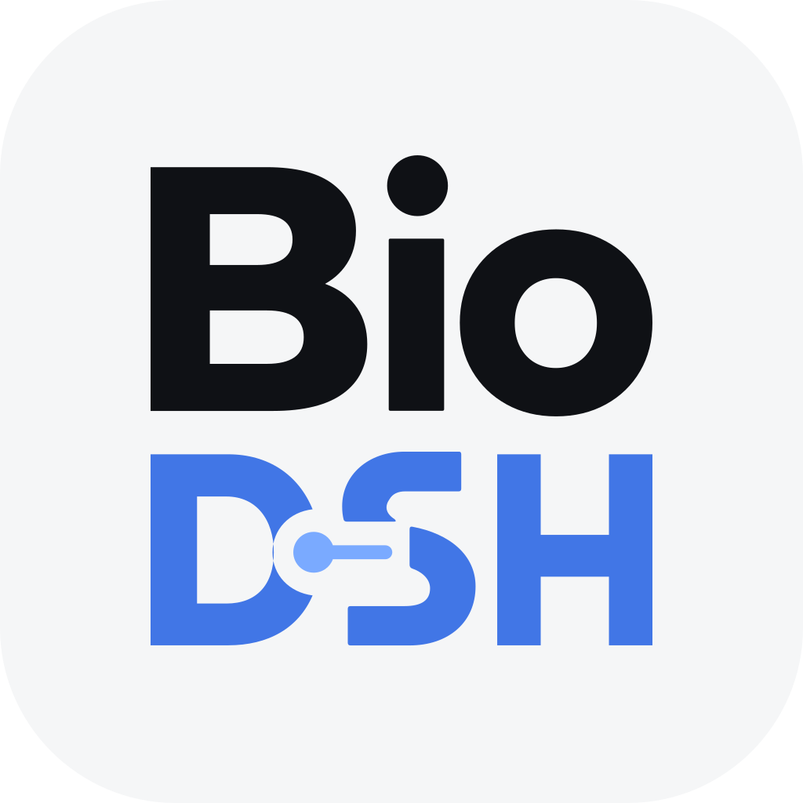
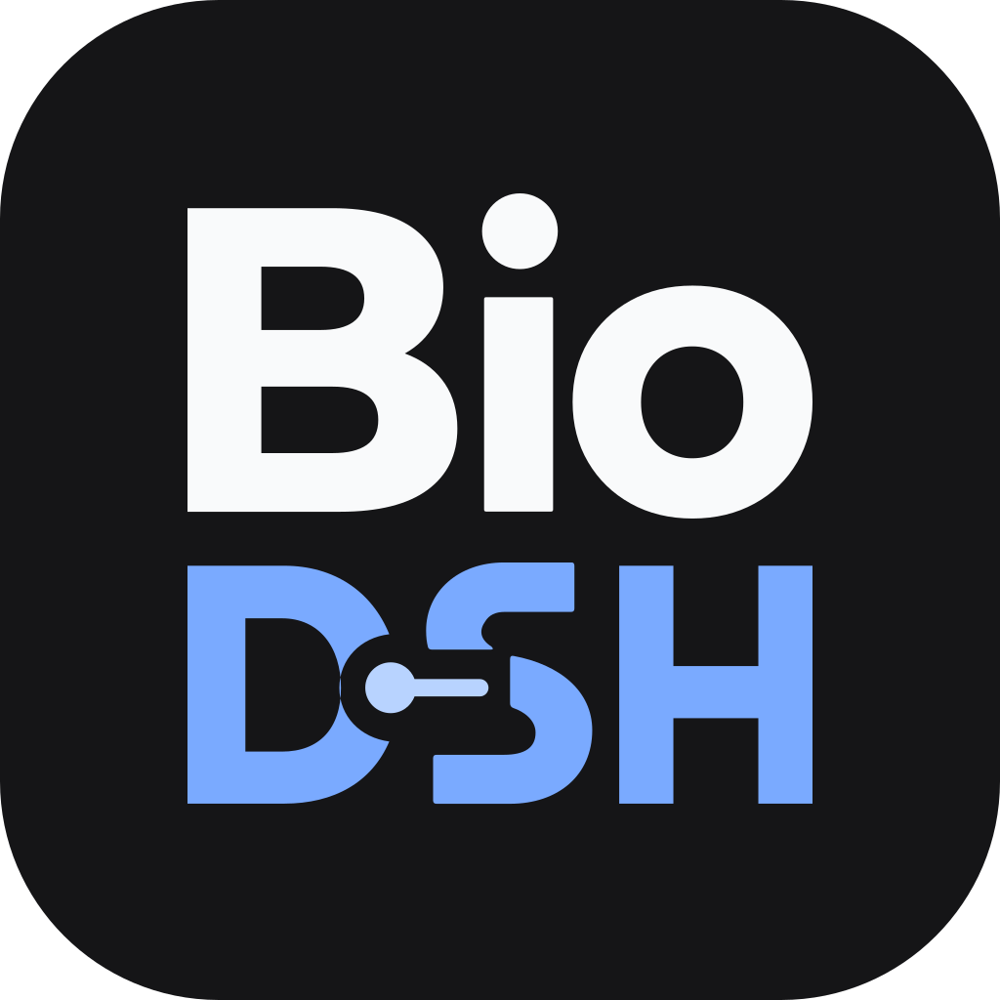
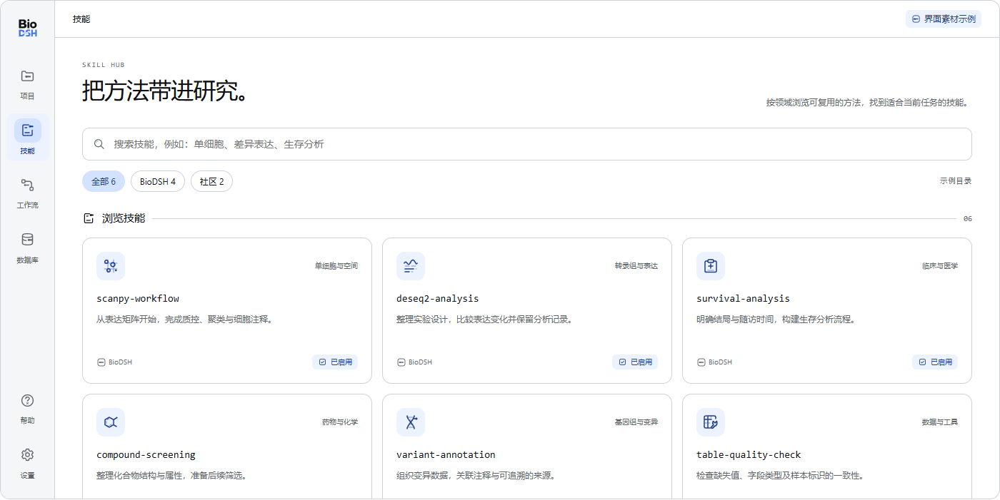

围绕项目，整理研究
把数据、任务和输出放在清楚的项目上下文中。
从数据到方法，从一次探索到可复用的流程。
为医生、湿实验科学家与生信研究者准备的智能体桌面。
基于 DeepSeek Harness · 开源项目


DATAMETHODSDISCOVERY晴蓝、柔和灰阶与清晰的图形语言，让项目、技能和工作流有一致的视觉秩序。
1.0 界面设计预览 · 尚未随安装包发布
把数据、任务和输出放在清楚的项目上下文中。
通过技能连接分析方法，浏览适合当前研究的工具。
新界面围绕工作流组织方法，读取与学习入口仍在开发中。